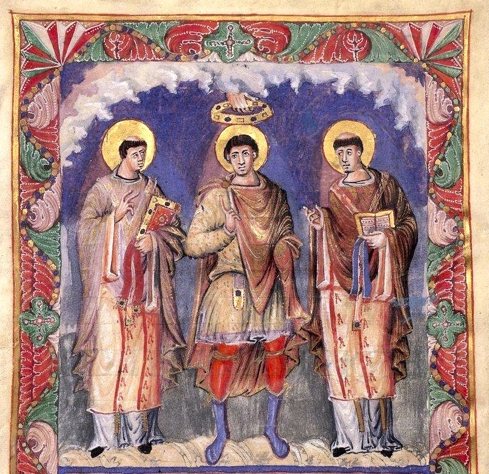

Debate: Church and State, Charlemagne to ClunyProposition: It is better for churches and monasteries that they be free of secular control.
Team 1:
argue for the Proposition
Team 2:
argue against the Proposition
Historical background information that you will need to understand, and explain
- What were the
circumstances of the founding of Cluny?
Give dates, names, reasons.
- How did Clunaic
monasticism spread? Why?
- What is a "lay abbot
"? What does (or
could) he do?
- Describe the popes and the papacy from 870-970.
Primary source evidence
Charlemagne's General Capitulary to the Missi contained a section on monks, which can be found here.
The foundation charter of the monastery of Cluny can be found online.
Other information
Some background material on Cluny, from Rosamond McKitterick's book The Frankish Kingdoms under the Carolingians, has been scanned in and placed on Canvas under Files as McKitterick on Cluny
A summary of church affairs in 10th c. Europe can be found here.
A survey of Cluny and its architecture can be found on my website here; note that you will have to use the username "student" and the password "medieval".
An excellent survey of ownership of churches can be found in Susan Wood, The Proprietary Church in the Medieval West (Oxford, 2006); all of it is useful, but see esp. chapter 11, "Nobles other than founders' heirs." You can access this book online through IUCAT; note that you will have to be logged in to your IU account.